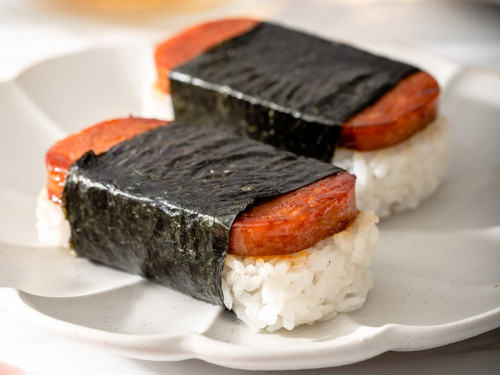

Musubi Recipe

Description:
Hawaiian spam musubi is the ideal savory treat when you are
on the go or packing for a picnic. This recipe features sweet
and savory caramelized spam which lays on a fluffy bed of
seasoned sushi rice wrapped with crispy roasted seaweed.
Ingredients:
- Short Grain Sushi Rice: short-grain rice is the best type of rice for musubi.
They are soft, sticky, and slightly springy to the bite.
- Rice Vinegar: a touch of rice vinegar seasons the rice and balances the flavor and richness of the spam.
- Salt: adds additional flavor and enhances the flavor of the rice vinegar.
- Spam:> you can use the original Spam or the 25% less sodium Spam based on your sodium preferences.
- Soy Sauce: adds a hint of umami flavor and a beautiful golden glaze to the spam. For best results, use traditional Japanese soy sauce.
- Granulated Sugar: sugar sweetens the rice and creates a beautiful caramelized glaze texture over the spam.
- Seaweed Sheets: you will need a large square roasted seaweed sheet. You will cut these seaweed sheets into 2-inch large strips to wrap the spam musubi.
Steps:
- Prepare the rice. Wash the rice until the water runs clear and drain. Add the washed rice and water to your rice cooker and cook. In a small mixing bowl, mix together the rice vinegar, sugar, and salt until the sugar dissolves. Then drizzle the mixture over the cooked rice and carefully mix it with a rice paddle until combined.
- Cook the spam. Slice the Spam into ¼ inch thick slices. Using a medium-sized skillet on medium-high heat, cook the spam until browned and crispy on the edges for about 4 minutes, flip after 2 minutes for even cooking.
- Caramelize the spam. In a small bowl, mix the soy sauce and water until combined. Turn the heat to medium-low heat and sprinkle the sugar evenly over the spam and flip the spam to evenly coat, for about 30 seconds. Next, pour in the soy sauce mixture. Swirl the sauce and flip the spam to evenly distribute. Then let the spam gently simmer until the sauce dissolves around 4 minutes. Flip the spam slices every 2 minutes.
- Assemble. Line the inside of your Spam can with plastic wrap. Add about ½ cup of rice into the lined spam container and gently press down to fill the mold. Pull the rice out of the mold. Place a slice of caramelized spam on top of the nori strip at the bottom, then place the rice on top of the spam, then roll up the spam and rice wrapping the nori around it. Secure the end by wetting with water and place the musubi with the seam side down. Continue with the remaining pieces.